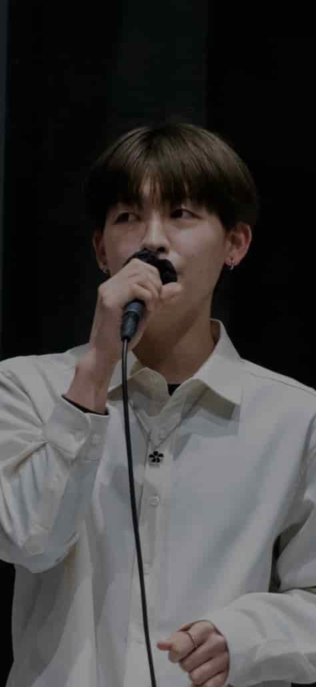
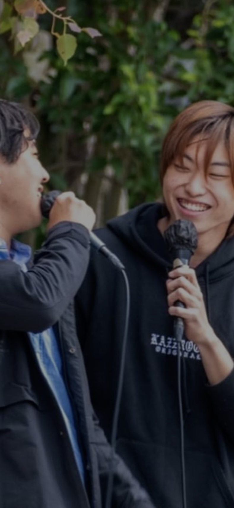
 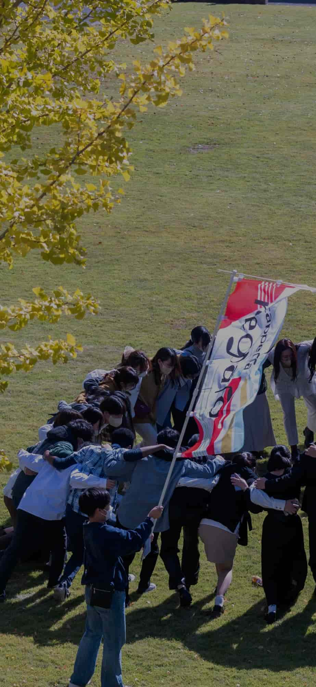
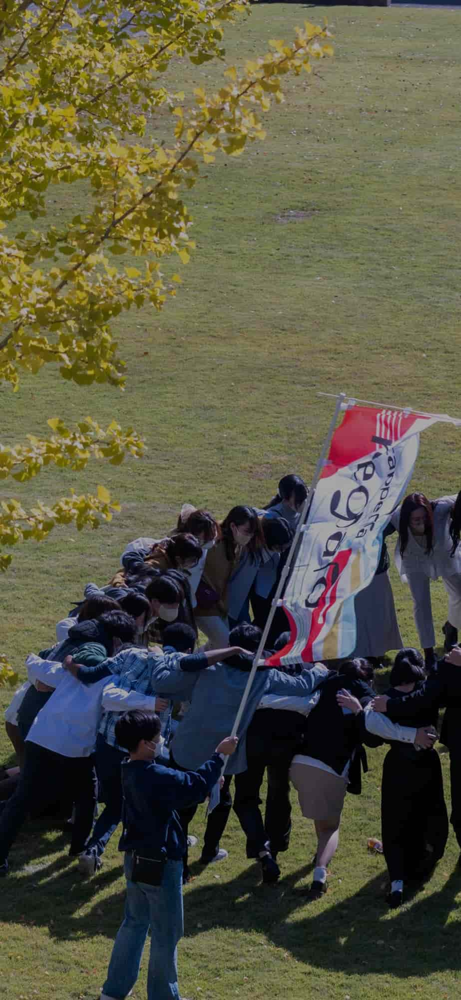
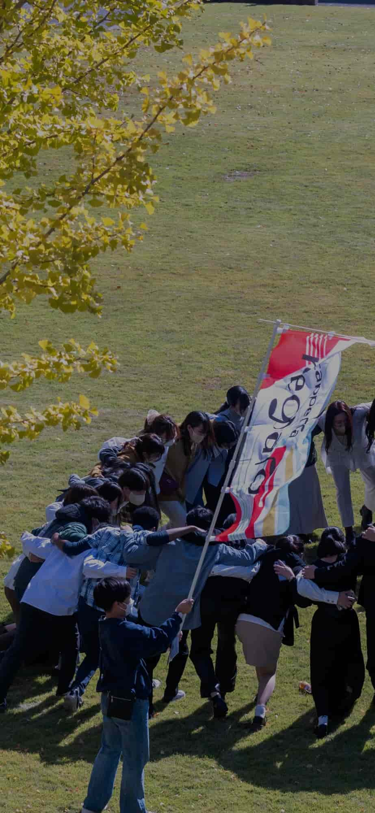
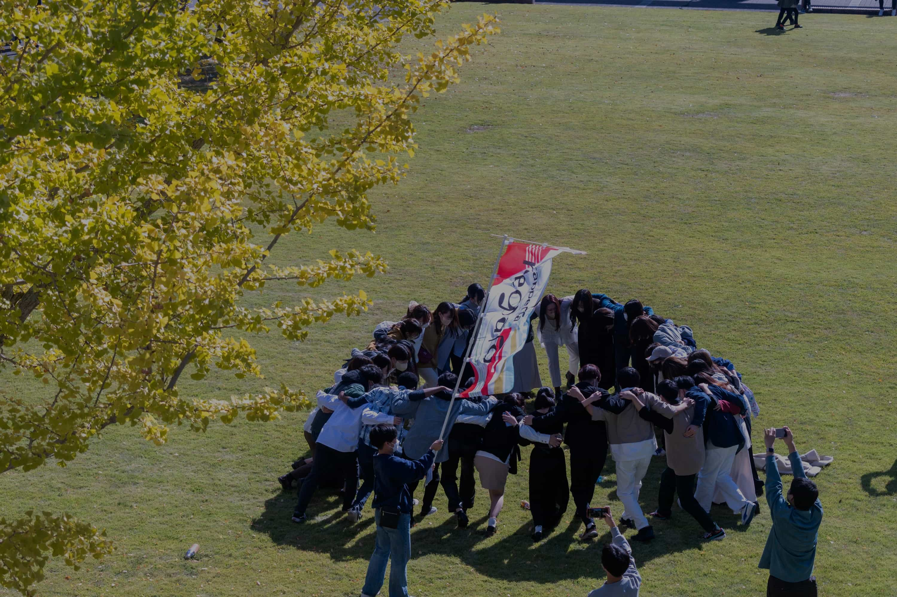

 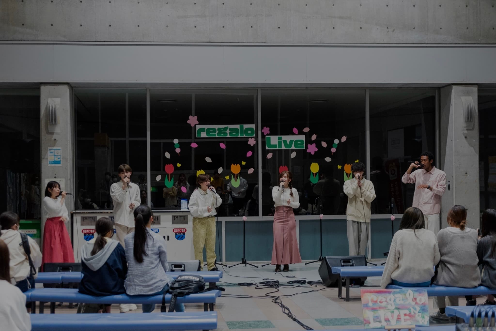
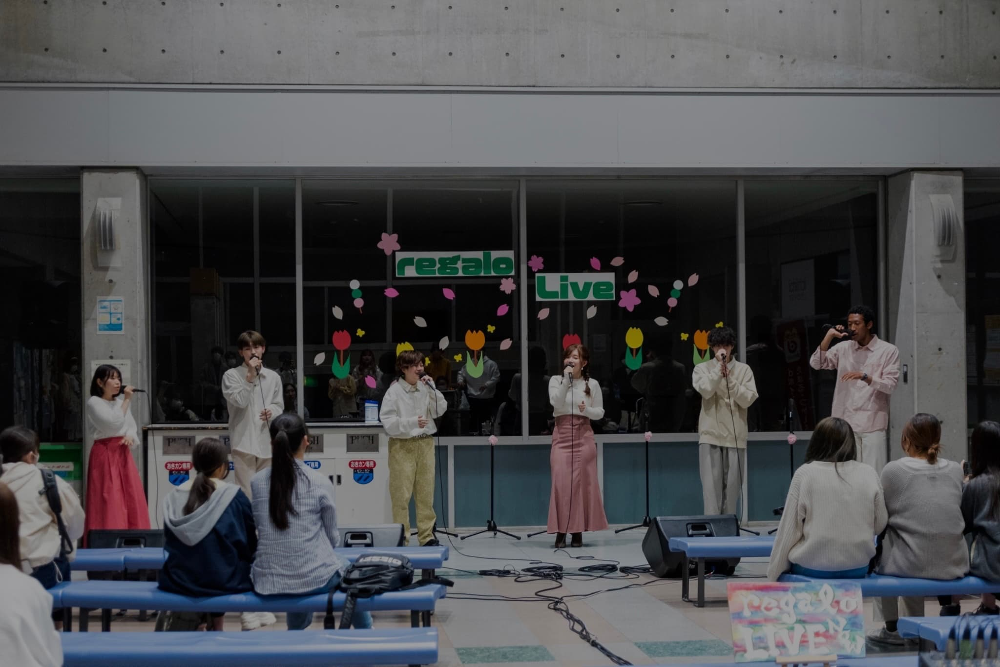

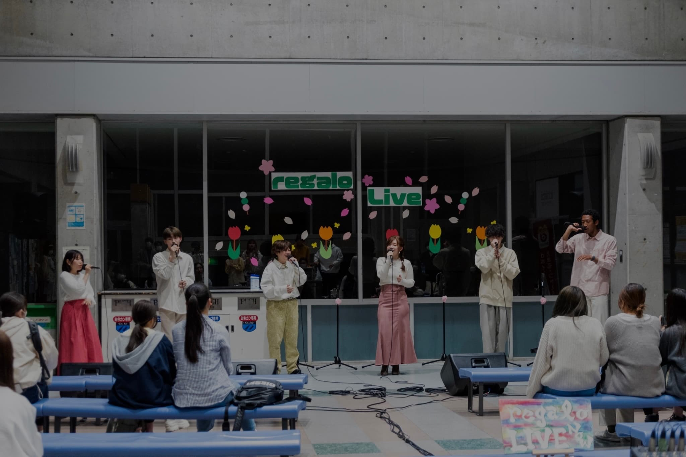
＜Blog/＞
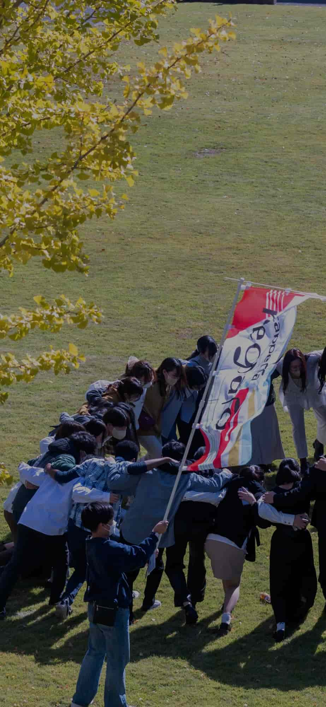
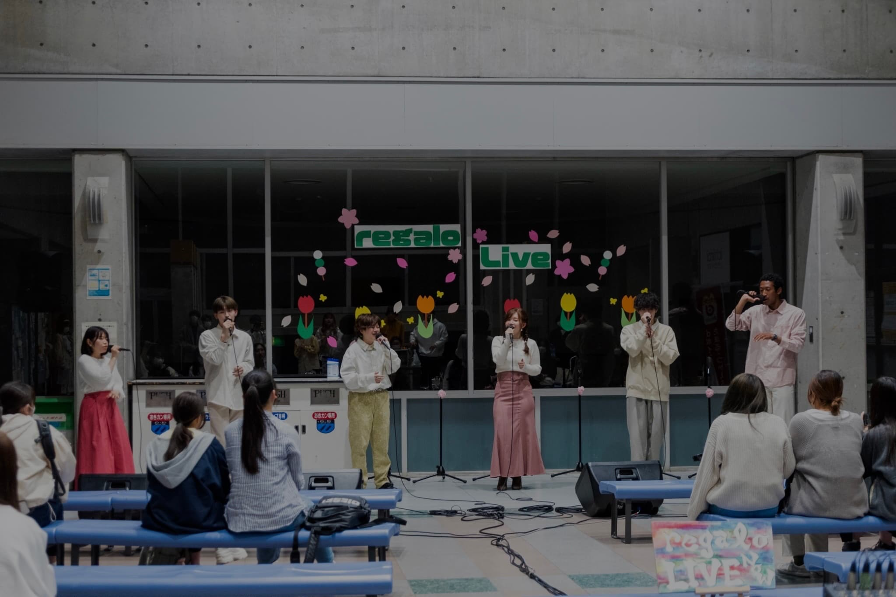
＜Blog/＞
2023.03.30
こんにちは！ スタートプログラミングです！ 今回は、3/25(土)にひろぎんホールディングス本社ビルの4F大ホールにて開催いたしました、第2回『スタプロ会議』の当日の様子をレポートさせていただきます😊『スタプロ会議』って？ スタプロ会議とは、スタートプログラミングに通う子どもたちが、自身のプログラミングした作品を他の生徒や保護者の方々にお披露目する発表会のことです。 作品作りはもちろん、発表用のプレゼン資料の作成や発表練習も含め、すべて子どもたちの手で何ヶ月も前から準備を行ってきました。 スタプロ会議はその集大成の場ともいえます。
一曲目 KICKBACK
努力 未来 A BEAUTIFUL STAR 努力 未来 A BEAUTIFUL STAR 努力 未来 A BEAUTIFUL STAR 努力 未来 A BEAUTIFUL STAR
2023.03.30
こんにちは！ スタートプログラミングです！ 今回は、3/25(土)にひろぎんホールディングス本社ビルの4F大ホールにて開催いたしました、第2回『スタプロ会議』の当日の様子をレポートさせていただきます😊『スタプロ会議』って？ スタプロ会議とは、スタートプログラミングに通う子どもたちが、自身のプログラミングした作品を他の生徒や保護者の方々にお披露目する発表会のことです。 作品作りはもちろん、発表用のプレゼン資料の作成や発表練習も含め、すべて子どもたちの手で何ヶ月も前から準備を行ってきました。 スタプロ会議はその集大成の場ともいえます。